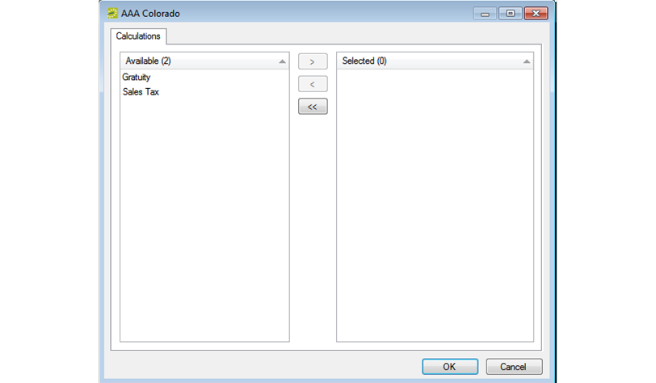
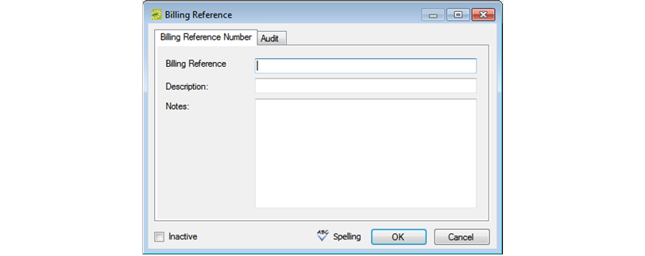

After you have configured a new group in your EMS database with the basic group information (group identifying information, billing information and/or other information), you have the option of configuring additional information for the group.
This topic will provide information that will allow you to:
An "Everyday User" is a registered user who can submit requests for reservations or schedule reservations in EMS Web App. When you add a new group in your EMS database, you decide the “level” of the group that you are adding. For a group that is added at the individual (personnel/employee) level, you might also need to create an everyday user from the group. This user can then create and view reservations on behalf of a group or groups in EMS Web App. You can create only one everyday user from a group. When you create an everyday user, you can also specify one or more delegates for the everyday user. A delegate is an everyday user who can create and view reservations on behalf of another everyday user. See Also: Configuring Everyday Users.
Tip: The User Defined Fields tab shows the prompts an everyday user must answer when requesting an account through EMS Web App and it is not relevant to the procedure described below.
| Field | Description |
|---|---|
| Name | Automatically populated after you select the group from the Groups window. |
| Password | The password that an everyday user must enter to log in to EMS Web App. |
| Email address | If this information has been entered in the Groups window for the group, then this field is automatically populated after you select the group from the Groups window. If the field is blank, you must enter the full email address for the user. (The user must enter this address to log in to EMS Web App.) |
| Phone/Fax | Optional fields. If this information has been entered for the group, then these fields are automatically populated after you select the group from the Groups window. If the fields are blank, you can enter values if needed. |
| Notes | Optional field. |
| External Reference | Optional field. Links the everyday user to an outside program if needed. |
| Network ID | Optional field. the everyday user’s network ID. |
| Email Opt Out | Select this option if the everyday user is not to receive automatic emails (such as reservation summary emails) from EMS Web App. The user will still receive manually sent emails. |
| Status |
Required field. Select the status for the everyday user:
|
| Security Template Required field | This determines the everyday user's access to the system—the menu items that the user can see and the information that the user can view in a tooltip when 'rolling-over' an event in EMS Web App. Note: For detailed information about web security templates, see Configuring Web Templates. |
| Time Zone | Required field. Select the time zone for the user. |
Tip: A "process template" defines the functions available to each type of everyday user in EMS Web App when they submit a request for a reservation. For detailed information about process templates, see Configuring Web Templates.
Tip: The Spelling option enables you to spell-check any information that you manually entered for the everyday user.
When you add a new group in your EMS database, you should also assign the group to an everyday user. This everyday user can then create and view reservations on behalf of the group in EMS Web App. You can assign a group to one or more everyday users.
Calculations are additional charges that can be applied to billable items (a category, a group, a group type, a resource, or a room) such as gratuity or sales tax. When you configure a group, you can assign the calculations that are to always apply to the group.

Tip: If the appropriate calculation is not available, you can configure it. See Configuring Calculations.
Remember, you can also assign calculations to a group type. (See Configuring Group Types.) If you have already assigned calculations for this group’s type, then these calculations are automatically applied to the group. The calculations show in the Selected list after you click OK and save the group.
You can configure a master list of billing reference numbers that are specific to the group.
Tip: You can display all billing reference numbers regardless of status by clicking Show Inactive. Any inactive billing reference numbers show in italics in the right pane.

Enter the information for the new billing reference number.
| Option | Description |
|---|---|
| Billing Reference Number | The billing reference number that is associated with the group. Note: The reference can be alphanumeric and it has a maximum of 100 characters, including spaces. |
| Description | A description of the billing reference number. |
| Notes | Any other comments or statements that are applicable for the billing reference number. |
| Inactive | Leave this option blank to add the reference as an active reference (the billing reference number is to be available when a reservation is made for the group). Select this option to inactivate the billing reference number. |
Tip: You can click Spelling to spell-check the information for the PO number before you save it.
You can configure a master list of PO numbers that are specific to the group. That way, if you need to edit the group information, instead of having to manually enter a new or different PO number, you can simply select it from this master list.
1. Open the Groups window and search for the group for which you are configuring the master PO numbers list.
2. On the Groups window, select the group, and then click Open. A group-specific window open. The group is automatically selected in the window.
3. In the left pane of the group-specific window, select PO Numbers. A list of all currently active PO numbers for the group shows in the right pane.
Tip: You can display all PO numbers regardless of status: click Show Inactive. Inactive PO numbers show in italics.
4. Click New. The PO Number dialog box opens.
| Option | Description |
|---|---|
| PO Number |
The PO number that is associated with the group. Note: The reference can be alphanumeric and it has a maximum of 100 characters, including spaces. |
| Description | A description of the PO number. |
| Notes | Any other comments or statements that are applicable for the PO number. |
| Inactive | Leave this option blank to add the PO number as an active number (the PO number is to be available when a reservation is made for the group). Select this option to inactivate the PO number. |
Tip: You can click to spell-check the information for the PO number before you save it.